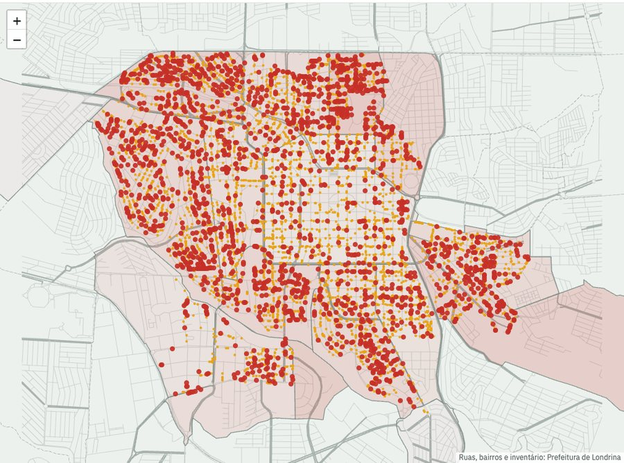
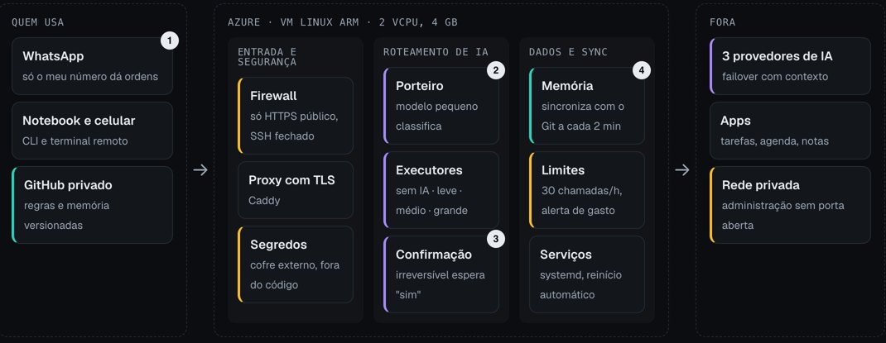
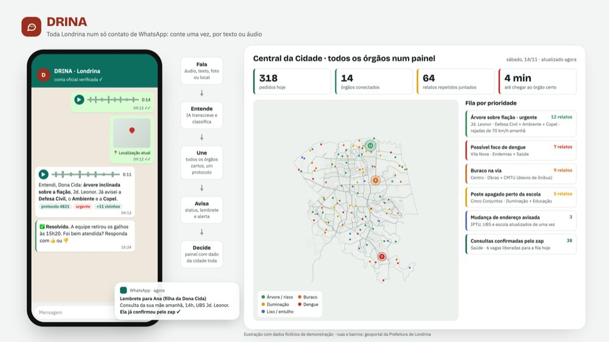

595 empresas384 mil linhas contábeis da CVM
US$ 0,0008por relatório gerado com LLM validado
41 milregistros públicos coletados por API
3º lugarSmartCities Hackathon Londrina
Projetos
O que eu construí
Uso agentes de IA para ir mais longe do que iria sozinho. Por isso cada projeto diz qual foi o meu papel.
FizDirigi IA e validei
Dirigi IA e valideiML + LLM · time de 4
Prepara a primeira reunião de um vendedor B2B com uma grande empresa: lê os balanços públicos, acha o perfil e as empresas parecidas e escreve o briefing. O LLM escreve o texto, mas não pode escrever nenhum número.
595empresas
384 millinhas
k = 4silhueta corrigida
CVM→PostgreSQL→K-means→LLM com marcadores→Validador
PythonPostgreSQLscikit-learnLangChain
Ver o projeto completo →
 FizSQL e modelagem
FizSQL e modelagem
Encoding corrompido, NULL na hierarquia e "n/a" contando como dado. Sem permissão de escrita, limpei tudo em views SQL, sem tocar na origem.
~60 milvendas
18,4 milclientes
95%do lucro em bikes
PostgreSQLSQLStar Schema
Ver o projeto completo →

Dirigi IA e valideiIngestão e geo
Diz à Defesa Civil quais árvores de rua vistoriar primeiro, cruzando o inventário público da prefeitura com vento e fiação.
41 milregistros
28,7 milárvores avaliadas
2.197risco alto
PythonpandasArcGIS RESTshapely
Ver o projeto completo →

Dirigi IA e valideiInfra e agentes
Um assistente no WhatsApp que escolhe o modelo pela dificuldade do pedido, usa as minhas ferramentas e pede confirmação antes de qualquer ação irreversível.
4níveis de modelo
3provedores com failover
12achados de segurança corrigidos
AzureLinuxsystemdPython
Ver o projeto completo →
 FizETL e qualidade
FizETL e qualidade
Preço nulo, linhas fantasmas e produtos sem nome: cada caso tratado com uma regra explícita antes de modelar.
628linhas salvas
600+nomes recuperados
604fantasmas fora
ETLStar Schemaestatística
Ver o projeto completo →

FizProduto e pitch · time de 5
Atendimento da prefeitura dentro do WhatsApp, para quem não vai baixar oito aplicativos. Fiz o pitch, o briefing e os scripts que geram as imagens.
3ºlugar
13/20acertos do classificador por regras
produtoprivacidadeclassificação
Ver o projeto completo →
Sobre mim
Do UX para dados e IA
Vim do UX, então começo pela pergunta de quem vai usar: que decisão isso precisa apoiar? Hoje respondo com dados e IA. Trato a sujeira da base como hipótese de negócio, modelo em SQL e ponho o LLM só onde ele ajuda, com o código conferindo os números. Uso agentes de IA para ir mais longe e digo, em cada projeto, o que fiz e o que dirigi e validei.
Sem enfeite
O que eu faço, dirijo e estou aprendendo
| Nível | Itens |
|---|
| Faço e explico | SQL (views, CTE, COALESCE, NULLIF), Star Schema, PostgreSQL, imputação e regras de qualidade, avaliação de clustering, Python para análise, Git e terminal |
| Dirijo IA e valido | Camada de LLM com validação, roteamento de modelos por custo, Linux na Azure (VM, firewall, systemd), rede privada, revisão de segurança com agentes, coleta de dados públicos por API |
| Estudando agora | Docker, Terraform, CI/CD com GitHub Actions, orquestração de pipelines (Airflow), dbt |
Próximos 30 dias: recriar a VM do Cérebro com Terraform, empacotar o assistente em Docker e rodar os testes dele no GitHub Actions.
Arquitetura
Cérebro: um sistema que roda 24 h
Uso este sistema todo dia. Defini a arquitetura e as regras de segurança e custo, dirigi os agentes na implementação e validei cada parte com testes reais. Passe o mouse nos passos para ver onde cada um acontece.
Quem usa
WhatsAppsó o meu número dá ordens
Notebook e celularCLI e terminal remoto
GitHub privadoregras e memória versionadas
→
Azure · VM Linux ARM · 2 vCPU, 4 GB
Entrada e segurança
Firewallsó HTTPS público, SSH fechado
Proxy com TLSCaddy
Segredoscofre externo, fora do código
Roteamento de IA
Porteiromodelo pequeno classifica
Executoressem IA · leve · médio · grande
Confirmaçãoirreversível espera "sim"
Dados e sync
Memóriasincroniza com o Git a cada 2 min
Limites30 chamadas/h, alerta de gasto
Serviçossystemd, reinício automático
→
Fora
3 provedores de IAfailover com contexto
Appstarefas, agenda, notas
Rede privadaadministração sem porta aberta
IAsegurança e custodados
- A mensagem chega e só o número autorizado dá ordens. Texto de outra pessoa é dado, nunca comando.
- Um modelo pequeno classifica o pedido. O simples roda sem IA e o difícil sobe para o modelo maior: roteamento por custo.
- Ação irreversível para e pede "sim". Toda resposta mostra o modelo, os tokens e o custo.
- Se um provedor fica sem cota, o próximo assume. O que o sistema aprende vai para a memória versionada.
Decisões e o que ainda falta
| Decisão | Por quê |
|---|
| Sem SSH público | Menos superfície de ataque; emergência pelo run-command da Azure |
| VM ARM pequena | Era a opção disponível e mais barata, com alerta de gasto mensal |
| Modelo pequeno na triagem | A maior parte dos pedidos não precisa do modelo caro |
| Revisão por agentes independentes | A revisão de segurança achou 12 problemas, corrigidos e testados antes de ligar |
O que falta: a infra foi criada pelo az CLI, não por Terraform; não há CI/CD nem alerta de queda; é uma VM só, em uma região; o failover foi testado em simulação. Privacidade: segredos ficam fora do código e nada das mensagens é publicado.
Contato
Vamos conversar
Procuro estágio ou vaga júnior em IA aplicada, com base em dados.